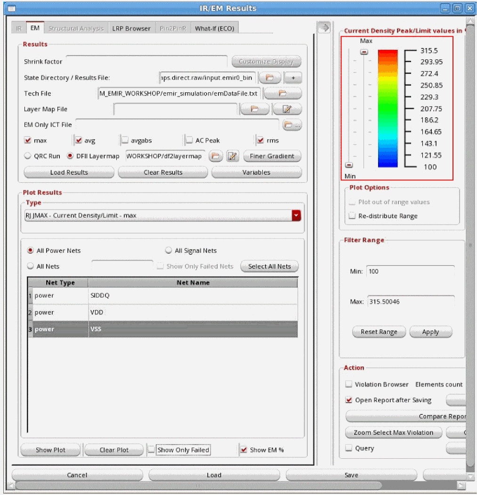

9
EM Analysis Results
- Overview
- Types of EM Analysis
- Design Resistor EM Current Analysis
- Viewing the EM Analysis Results
- Displaying Current Directions for EM Plots
- Reporting the Direction of Currents in the EM Result File
- Generating EM Reports in Voltus-Fi-XL
-
Types of EM Analysis Plots
- RJ JMAX – Current Density/Limit and J_MAX – Current Density Plots
- JAVG – Current Density/Limit and J_AVG Current Density Plots
- JABSAVG – Current Density/Limit and J_ABSAVG – Current Density Plots
- JACRMS – Current Density/Limit and J_ACRMS – Current Density Plots
- JACPEAK – Current Density/Limit and J_ACPEAK – Current Density Plots
Overview
Voltus™-Fi Custom Power Integrity Solution-XL uses the simulation database generated by Spectre APS/XPS simulators and displays the results of the electromigration (EM) analysis on the Virtuoso layout.
It also generates text and html reports of the analyses and lets you query the analyses results to view specific violations in the layout. This is used to debug the high EM violation regions in the design.
Batch mode support is provided for specifying variables for EM analysis, loading EM analysis results and generating reports. For details of the batch commands used to load and print EM analysis result reports, see load_em_results and print_em_report.
Types of EM Analysis
The following analysis types are available in Voltus-Fi-XL:
Average (avg) Analysis
Calculates the Current Density violations based on the average value of the DC current for metal lines, vias, and contacts.
where “T” is time and “I(t)” is value of current.
Root Mean Square (rms) Analysis
Calculates the Current Density violations based on the root mean square (RMS) of the AC current for metal lines, vias, and contacts.
where “T” is time and “I(t)” is value of current.
Peak (max) Analysis
For this analysis, the Current Density violations are calculated based on the maximum DC current for metal lines, vias, and contacts. The I peak(limit)value is specified using the em_jmax_dc_peak and em_jmax_ac_peak constructs in the ICT file.
AC-Peak (AC Peak) Analysis
For this analysis, the Current Density violations are calculated based on the peak AC current for metal lines, vias, and contacts. It is applied to periodic AC or pulsed DC signals.
Ipeak_ac(limit)=Ipeak(limit)/(r)1/2
where the Ipeak(limit) is specified in the ICT file
If the construct em_peak_with_duty_ratio explicit is specified in the process block of the ICT-EM file, then the limits specified using the em_jmax_dc_peak and em_jmax_ac_peak constructs are AC-Peak limits. In this case, same limit values are reported for peak (max) and AC_peak analysis. An example of the process section of ICT file is provided below.
process "gpdk" {
em_conductor_unit mA/um
em_via_area_unit mA
em_via_unit mA
em_peak_with_duty_ratio explicit
}
Different Settings for AC-Peak Analysis
There are different types of AC-peak analyses based on the dynamicACPeak variable setting.
When dynamicACPeak is not Set
When the dynamicACPeak variable is not set or set to false, which is the default value, the values of duty ratio “r” is as follows:
The value of “Td” is calculated in the following order of priority:
-
If the net frequency is specified either using the toggleNetFrequency or toggleNetFrequencyFile variable, then
Td = r/FwhereFis the net frequency specified usingtoggleNetFrequencyortoggleNetFrequencyFile -
If the simulation is run with specified time window and the net frequency is not specified using either
toggleNetFrequencyortoggleNetFrequencyFile, then
Td = r * time window period -
If neither the simulation time window nor the net frequency is specified using either
toggleNetFrequencyortoggleNetFrequencyFile, then
Td = r * TwhereTis the simulation period
When dynamicACPeak is Set to True
When the dynamicACPeak variable is set to true or multiPeak, the value of duty ratio “r” is as follows:
Td= the time duration in micro second of the total “On Time” period, where abs(I)>(max(abs(I)/2.0) during transient analysis.
Voltus-Fi-XL does not calculate Td as max(abs(I)/2.0) period. It calculates Td by measuring the pulse at half-energy level because of performance reasons. The variable, pwc_threshold is specified in the EMIR configuration file to define the current threshold for finding the start of the pulse.
When you set dynamicACPeak = true or multiplePeak, it is important to set 'ipwc' analysis in the EMIR configuration file when running Spectre. PWC stands for pulse-wise constant, where the actual current waveform from simulation is converted to a pwc waveform. This new waveform is used for 'Td' calculation.
The following command is specified in the configuration file:
net analysis=[ipwc] pwc_threshold=1e-6
Td has different values for the true/multiPeak values of dynamicACPeak:
-
When
dynamicACPeakistrue,Td=the time duration of maximum peak -
When
dynamicACPeakismultiPeak,Td=sum of time durations of different peaks,Td1+Td2+TdN....
Td for a particular peak is added to the final Td only if the peak current is greater than or equal to percentage threshold of maximum current. This threshold is specified by the multiplePeakPercentThreshold variable.applyRThreshold. This is because a small “r” value results in an unreasonable increase in the Ipeak_ac limit. To avoid this scenario, use the applyR keyword to reset the value of “r” in the ICT file or change the value of the applyRThreshold variable, either in the Variables form or in batch mode.Td for multiple clock cycles: In case the design is simulated for multiple clock cycles and you want to perform dynamicACPeak analysis with multiplePeak setting, then it is recommended to set either of the following options in the Variables form of the EM tab of the Voltus-Fi GUI:
You can also specify the options in theemir.conffile using theemirutilcommand. For details see, EMIR Control File Options Supported in Voltus-Fi-XL.
The effectiveTdwill be calculated as follows:
(Td1+Td2+....+TdN)/number of cycles
Avg-Abs (avgabs)
Calculates the Current Density violations based on the average of the absolute current for metal lines, vias, and contacts.

where “T” is time and “I(t)” is value of current.
Design Resistor EM Current Analysis
By default, the EM current analysis is only performed on parasitic resistors defined in the RC section of the xDSPF file. If required, EM analysis for design resistors in the xDSPF instance section can be enabled. This analysis can be applied to primitive resistor elements, or resistors defined with subckt definitions.
net design_res_models=[resistor] analysis=[iavg] (primitive resistor)
net design_res_models=[name=rhim] analysis=[iavg] (resistor subckt rhim)
For the EM current analysis the parameters $l, $w, and $lvl are expected to be defined for primitive resistor calls, and l and w for subckt resistor calls in the xDSPF instance section. If the parameter names are differently defined in the xDSPF file—even if only the casing is different—the mapping can be performed in the conf file statement.
net design_res_models=[name=rhim_m l=lr w=wr] analysis=[iavg]
net design_res_models=[name=rhim_m l=L w=W] analysis=[iavg]
Layer information, and units for l/w can be defined in the EMIR conf file statement.
net design_res_models=[name=rhim_m layer=mt1 unit=1] analysis=[iavg]
The design resistor related EM results are reported in the EM analysis report file.
Viewing the EM Analysis Results
Before plotting EMIR results, ensure that the emir mode was enabled while performing the simulation. Also, check that the simulation result file is available in the output directory of the simulation results. The naming convention of the simulation result file is, *.emir#_bin. For example, your result file could be named, xps.emir0_bin.
Follow these steps to view the EM analysis results.
-
In the Voltus-Fi-XL console, choose IR/EM Analysis – Rail Analysis Results. The IR/EM Results form opens. Click the EM tab to plot the EM analysis results. This form is shown below.
Figure 9-1 IR/EM Results Form – EM Tab - In the Results group box, specify the shrink factor, if any, by which the xDSPF was shrunk in the Shrink factor field.
- Click Customize Display to select the nets for which you want to view the display. The Customize Display pop-up window opens. You can only customize the display for selected nets before the results are loaded. The Customize Display button is disabled once the results are loaded.
-
Specify the State Directory / Results File, which is a file that stores the results of the APS/XPS simulation. The naming convention of the result file is
*.emir#_bin. - Select the + button to specify multiple result files.
- Specify the technology file in the Tech File field. The following technology files are supported in the Voltus-Fi-XL flow:
-
Specify the Layer Map File. This file is used to map the layer names in the simulation database to the layer names in the technology file specified in the Tech File field. This is optional and is only required if the layer names in the simulation database are different from the ones in the technology file. You can also create a new layer map file or edit an existing file, using the edit button provided next to the field. For more information about the layer map file, see Layer Map File in the “File Formats” chapter.
-
Specify the EM Only ICT File, which includes information about process and EM models to be used for EM analysis. This is an optional file that can be provided with the
qrcTechFileflow. When provided, theprocessandem_modelinformation will be picked up from the specifiedEMOnlyICTFile. -
Specify either the QRC Run or the DFII Layermap. When either of these options is specified, the plots displayed on the layout show solid shape highlighting. For more information, see Solid Shape Highlighting.
-
Select QRC Run. Two text fields with browse buttons appear in the form. Click on the Browse buttons to open the pop-up windows, Select QRC Run Directory and Select QRC Run Name to specify the path to the QRC Run Directory and the QRC Run Name, respectively.The display now generated will be based on the shape database generated by Quantus.When you switch between the IR and EM tabs, the selected QRC Run remains intact. This means that the Quantus run selections, run directory and run name fields, made on one tab remain populated for the other tab even after clearing the analysis results.For more information about the setup requirements for the Quantus run flow, see Solid Shape Highlighting.
- Specify DFII Layermap. This layer map file is the APS/XPS-to-DFII layer map file. When this file is specified, the plots displayed in the layout show solid shape highlighting. You can also create a new layer map file or edit an existing file, using the edit button provided next to the field. This layer map file is the same file that is used in structural analysis. For more information about the file format and description, see the DFII Layer Map File section in the “File Formats” chapter.
You can also specify this file by using thevfiDfiiLayerMapFileenvironment variable either in the.cdsenvor the.cdsinitfile. For more information, refer to the Environment Variables chapter. -
Select QRC Run. Two text fields with browse buttons appear in the form. Click on the Browse buttons to open the pop-up windows, Select QRC Run Directory and Select QRC Run Name to specify the path to the QRC Run Directory and the QRC Run Name, respectively.
-
For the DFII layer map flow, click Finer Gradient to view the finer gradient for the selected layers. When you click this button, the Finer Gradient Layer Selection pop-up window opens. In this window, all the layers are selected by default. Click Deselect All and select the PGDB layers for which you want to view the finer gradient and click OK. For details, see Displaying Finer Color Gradient for Selected Layers in IR and EM Plots.
-
Click Variables to open the Variables form. In this form, you can view and/or edit the variables that are used for EM analysis. Double-click the value of any variable to edit it. For variables that require a path to a file or a directory to be specified, click the Browse button next to the variable field and specify the path.
Figure 9-2 The Variables FormAfter updating the values, click OK. To restore the default values, click Default.
You can also set above variables in batch mode by using the set_variable command.For descriptions of the variables that can be set in the above form, see the “Variables” chapter. -
Specify the Type of EM analysis to plot the current density violations. The available options are max, avg, avgabs, AC Peak, and rms. You can select more than one analysis type at a time. By default, max and avg are selected.
- max: calculates the Current Density violations based on the maximum DC current
- avg: calculates the Current Density violations based on the average value of the DC current
- avgabs: calculates the Current Density violations based on the average value of absolute current
-
AC Peak: calculates the Current Density violations based on peak AC current
- rms: calculates the Current Density violations based on the root mean square (RMS) value of the AC current
For details of the above analysis types, see Types of EM Analysis. -
Click Load Results to load the results of the EM Analysis. Once the results are loaded, the list in the Plot Results group box is enabled. The list of plots corresponds to the selected analyses types. In addition to the plots specific to the chosen analysis type, Peak Tap Current and Peak Resistor Current plot types are available for all EM analyses.
- TC - Peak Tap Current: analyzes and reports peak tap currents
- RC - Peak Resistor Current: analyzes and reports peak resistor currents
For details of the above plots, see TC, TCAVG, TCRMS – Tap Current Plots and RC, RCAVG, and RCRMS – Resistor Current Plots in the “IR Drop Analysis Results” chapter.
You can select from the available plot types. For more information about the different EM type plots, see Types of EM Analysis Plots. - Click Clear Results to clear the results.
- Click All Power Nets to view EM plots for all power nets.
- Click All Signal Nets to view EM plots for all signal nets.
-
Click Select All Nets to select all the nets listed in the table. For example, if you select Power Nets and click Select All Nets, all power nets listed in the table are selected. The list box lists Net Type and the corresponding Net Name.You can search for specific nets for which you want to plot results by typing the net name in the text field provided in the form. The list box is updated to display information about the specified net.The net name is case-sensitive. This is shown in the image below.
- Click Show Only Failed to plot results only for those nets that failed the EM check. Selecting this option will set the minimum value for the slider to 1.
-
Click Show EM% to display the EM violations as percentages. The Min - Max slider range displays the EM violations as a percentage of Current Density and Current Density limit (J/Jlimit) values. A percentage of 100 and above indicates EM violations. This is shown in image below.The Show Only Failed and Show EM% options are disabled when non-ratio type plots are selected in the Plot Results group box. For details of plot types, see Types of EM Analysis Plots.Figure 9-3 Viewing EM Violations as PercentagesIf a net contains multiple pins, the pins on the same net may be shorted together. For more information, see the Port Order Handling section in the “Postlayout Simulation” chapter of the Spectre Circuit Simulator and Accelerated Parallel Simulator User Guide.
-
Click Show Plot to view the plot in the layout. When you click Show Plot, the IR/EM Results form expands to show the available plot display options. In this form, you can customize the EM analysis plot displays. You can use these options to customize the displayed plots.
These options are explained in detail in Specifying the Display Options for IR/EM Plots section in the “IR Drop Analysis Results” chapter. The figure below shows the display options in the expanded IR/EM Results form and the EM results plot for all signal nets.
Figure 9-4 Viewing the EM Plot for All Signal Nets - Click Clear Plot to clear the plot for the selected net from the Virtuoso layout. For this, select the net for which you want to clear the plot in the list box and then click Clear Plot.
Displaying Current Directions for EM Plots
When you load EM results and click Show Plot, the expanded IR/EM Results form opens. In this form, there are options provided for displaying the current direction between nodes and for customizing the size of the arrows showing the direction of the flow of current. In the image above, the Display group box shows the following options:
- Current Direction: Check this option to enable the display of current directions in the layout for any EM plot type.
- Display Size: Specify the size of the symbols that are used for displaying the current directions. You can increase or decrease the size of the symbols based on your requirements. The acceptable range is between 0 and 5. If you specify a value greater than 5, the software will set the display size to the maximum possible size, which is 5.
When the Current Direction option is enabled, the plot in the layout shows white highlights for the current direction flow of selected nets. The highlight appears on top of the plot highlights. The current direction plot honors the following user settings:
- Layer selection specified in the Layers group box
- The Select Nets option in the Type group box of the IR/EM Results form, and
- Show Only Failed check in the IR/EM Results form
- For metal layers, arrows are used to indicate the flow of current in the directions; "E", "W", "N", "S", "NE", and so on. For example, if the direction of current is from West to East, the arrow will be horizontal and will point from left-to-right while if the direction of current is South to North, the arrow will be vertical and will point from bottom-to-top.
-
For vias, the direction of the current is from layer -> to layer. A cross symbol (X) is used to show currents flowing down, while a diamond-shaped dot shows currents flowing up.
This is shown in the image below.
Figure 9-5 Current Flow Direction Representation in the layout
Reporting the Direction of Currents in the EM Result File
You can print information about the direction of current flow for each layer in the EM result file. This current direction is reported in the “Current Direction” column in the report.
You can specify the reporting of current direction in batch mode in either of the following ways:
-
Specify the following in the
vfibatchcommand file:set_variable idirn true -
Specify the following in the EMIR control file:
emirutil idirn=true
The direction of current is printed in the following manner:
- For metal layers, the direction of current is printed as “E”, “W”, “N”, “S”, “NE”, and so on. For example, if the report prints the direction of current as “E”, it means the current is flowing from West to East. If the report prints the direction of current as “N”, it means the current is flowing from South to North.
-
For vias, the direction of current is printed as “from layer -> to layer”. For example, in below figure, current direction for
via2ismetal3->metal2.
Sample EM Analysis Results File
Access to this video will depend on the availability of a web browser and a Cadence Online Support account.
Generating EM Reports in Voltus-Fi-XL
You can generate both textual and html reports for EM analysis results in Voltus-Fi-XL from the simulation results by specifying the EMIR control file (emir.conf), the EMIR database file, and the output directory.
For more information about generating EM reports in Voltus-Fi-XL, see Reports Generated Using the EMIR Control File.
For more information about default reports generated for EM analysis and to view a sample EM analysis report, see Default Reports Generated for EMIR Analysis.
Types of EM Analysis Plots
Following EM Plots are available for viewing and debugging:
- RJ JMAX – Current Density/Limit and J_MAX – Current Density Plots
- JAVG – Current Density/Limit and J_AVG Current Density Plots
- JABSAVG – Current Density/Limit and J_ABSAVG – Current Density Plots
- JACRMS – Current Density/Limit and J_ACRMS – Current Density Plots
- JACPEAK – Current Density/Limit and J_ACPEAK – Current Density Plots
qrcTechFile flow and the EM Only ICT File flow. They are not supported in the emDataFile flow.The different EM analysis plot types available and the corresponding analysis types are listed below:
- TC plots – max, avg, avgabs, AC Peak, rms analyses
-
TCAVG, TCRMS plots – max, avg, avgabs, AC Peak, rms analyses (only available in the
qrcTechFileflow) - RC plots – max, avg, avgabs, AC Peak, rms analyses
-
RCAVG, RCRMS plots – max, avg, avgabs, AC Peak, rms analyses (only available in the
qrcTechFileflow) - RJ JMAX and J_MAX plots – max analysis
- JAVG and J_AVG plots – avg analysis
- JABSAVG and J_ABSAVG plots – avgabs analysis
- JACRMS and J_ACRMS plots – rms analysis
-
JACPEAK and J_ACPEAK – AC Peak analysis (only available in the
qrcTechFileflow)
RJ JMAX – Current Density/Limit and J_MAX – Current Density Plots
These plots are applicable to the “max” analysis type. The J_MAX plot reports the Current Density (J) value based on peak currents. It is used to locate high Current Density areas in the design.
The RJ JMAX or the Current Density/Limit plot reports the ratio of the wire Current Density to the Current Density limit that is allowed by the process – (J/JMAX) based on peak currents. So, all wires should have a ratio of less than 1.0. You can debug or fix the Current Density violations that have a ratio of more than1.0. The key advantage is that the value of this ratio is consistent across designs.
Information Displayed in Annotation Browser
The EM/IR tab of Annotation Browser displays the following columns for the Current Density plot types for peak currents:
- Value
- Layers
- Short Message
- Density
- Current
- Current Limit (mA)
- Needed Width
- Width
- Length
- Resistance
- Via Area
- Number of Vias
- Needed Number of Vias
- Net
The plot below shows the Current Density limit (J/JMAX) violation values based on peak currents for the selected power nets.
Figure 9-6 RJ JMAX Plot for Specified Power Nets – Displaying Customized Violation Range
JAVG – Current Density/Limit and J_AVG Current Density Plots
These plots are applicable to the “avg” analysis type. The J_AVG plot analyzes and reports the Current Density (J) values based on average currents while the JAVG plot reports the J/JMAX violation values based on the average currents.
Information Displayed in Annotation Browser
The EM/IR tab of Annotation Browser displays the following columns for the Current Density plot types for average currents:
- Value
- Layers
- Short Message
- Density
- Current
- Current Limit (mA)
- Needed Width
- Width
- Length
- Resistance
- Via Area
- Number of Vias
- Needed Number of Vias
- Net
The plot below shows the average Current Density limit (J/JMAX) violation values based on average currents for the selected nets. The violation range is customized using the Min Max sliders in the IR/EM Results form.
Figure 9-7 JAVG Plot for Selected Nets – Displaying the Customized Violation Range
JABSAVG – Current Density/Limit and J_ABSAVG – Current Density Plots
These plots are applicable to the “avgabs” analysis type. The J_ABSAVG plot analyzes and reports the Current Density (J) values based on the average of the absolute current while the JABSAVG plot reports the J/JMAX violation values based on the average of the absolute current.
Information Displayed in Annotation Browser
The EM/IR tab of Annotation Browser displays the following information for the Current Density plots for the average of the absolute currents:
- Value
- Layers
- Short Message
- Density
- Current
- Current Limit (mA)
- Needed Width
- Width
- Length
- Resistance
- Via Area
- Number of Vias
- Needed Number of Vias
- Net
The plot below shows the Current Density limit (J/JMAX) violation values based on the average of the absolute currents for all signal nets. The violation range is customized by using the Min Max sliders in the IR/EM Results form.
Figure 9-8 JABSAVG Plot for All Signal Nets – Displaying the Customized Violation Range
JACRMS – Current Density/Limit and J_ACRMS – Current Density Plots
These plots are applicable to the “rms” analysis type. The J_ACRMS plot analyzes and reports Current Density (J) values based on the root mean square (RMS) value of the AC currents while the JACRMS plot reports the J/JMAX violation values based on the RMS value of the AC currents.
Information Displayed in Annotation Browser
The EM/IR tab of Annotation Browser displays the following columns for Current Density plots based on the RMS value of the AC currents:
- Value
- Layers
- Short Message
- Density
- Current
- Current Limit (mA)
- Needed Width
- Width
- Length
- Resistance
- Via Area
- Number of Vias
- Needed Number of Vias
- Net
The plot below shows the Current Density (J/JMAX) violation values based on the RMS value of the AC currents for all power nets. The violation range is customized by using the Min Max sliders in the IR/EM Results form.
Figure 9-9 JACRMS - Plot – Displaying the Customized Violation Range for All Power Nets
JACPEAK – Current Density/Limit and J_ACPEAK – Current Density Plots
These plots are applicable to the “AC Peak” analysis type, which is only available in the qrcTechFile flow. These plots are not available in the list for the emDataFile flow even if the analysis type “AC Peak” is selected. The J_ACPEAK plot analyzes and reports Current Density (J) values based on the peak value of the AC currents while the JACPEAK plot reports the J/JMAX violation values based on the peak value of the AC currents.
Information Displayed in Annotation Browser
The EM/IR tab of Annotation Browser displays the following columns for Current Density plots based on the peak value of the AC currents:
- Value
- Layers
- Short Message
- Density
- Current
- Current Limit (mA)
- Needed Width
- Width
- Length
- Resistance
- Via Area
- Number of Vias
- Needed Number of Vias
- Net
Return to top